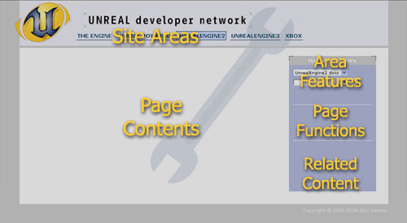

UDN
Search public documentation:
WhatToReadFirstJP
English Translation
한국어
Interested in the Unreal Engine?
Visit the Unreal Technology site.
Looking for jobs and company info?
Check out the Epic games site.
Questions about support via UDN?
Contact the UDN Staff
한국어
Interested in the Unreal Engine?
Visit the Unreal Technology site.
Looking for jobs and company info?
Check out the Epic games site.
Questions about support via UDN?
Contact the UDN Staff
はじめにお読みください
最初に読んでおきたいこと
Unreal Developer Network（アンリアル ディベロッパー ネットワーク）の「はじめてみよう」のページにようこそ。このページはアーティストと技術者の両方の開発者の方々に UnrealEngine?を紹介し、初めに必要なリソースを提供するために書かかれました。ロードマップのステップおよびUnrealEngine を使用してプロジェクトを開発時に取るプロセスとしてこのページをご使用ください。 初心者の方はこちらページをご覧ください。 Welcome 初心者の方はこちらページをご覧ください。 Welcome ライセンシーの方はページもご覧ください。 ライセンシーEngine の入手
ライセンスファイル リポジトリのページをチェックして、最新のバイナリのリリースをチェックしてください。チームメンバーの誰かがすでにダウンロードしたかどうかも、調べるとよいでしょう。 Epic Gamesによる公式なドロップは、ソースやバイナリ（大抵はデモ内容と共に）を含みます。中間及びプレビューのドロップは、しばしばソース専用で、将来的なマージを計画するために使われることが多く、実際の制作向きではありません｡ Epic Gameでは、Windows PC、Linux PC および Xbox のためのドロップしかデザインしていません。Secret Level により、ソニーのPlaystation 2エンジンのコンソール ビルドは維持されます。現時点ではMacintosh 用の Unreal Engine 2 ビルドはありませんが、Unreal Engine 2.5 （UT2004としても知られている） はMacintosh上で起動することができます。 公式なコードドロップはライセンスファイル リポジトリから入手できます。エンジンサポート
ドキュメンテーション
Webサイトのナビゲート
UDN Web サイトはサポートを得るのに最適で、詳細な文書やテュートリアル、内容の例を提供しています｡ UDN Webサイトは共通のレイアウトをシェアしています：
- Site Areas はサイトの上部全域にあるツールバーで、さまざまなUDNのエリアを表示しています。
- Page Contents は大部分のスクリーンを占め、現在の文書が実際に表示されています。
- Area Features は右側にあるツールボックスの上位部分で、特別なエリアなどへのリンク機能、電子メール通知やマスターインデックスを含みます。
- Page Functions は右のツールバーの中間部分で、ページ編集、ファイルの添付、印刷可能なページを表示するなど、ページに関連したトピックを含みます。
- Related Content は右のツールバーの底の部分で、他の文書や現在のトピックに関連した文書のカテゴリーを提供します。
UDN文書の警告
UDN文書は実用性と効率性を重視しています。ユーザーが可能な限り早く、簡単に操作できるこを目的としています。このためには、「Unreal のやり方」をお勧めします。これはどのような場合もエンジンに任せることを意味します｡場合によっては、これが逆効果、または遠回りに思えるかも知れません｡ しかし、エンジンはシステムとして確立されたものです｡システムが提示する解決方法、我々が提供するソリューションは、Unreal Engine という特定の環境下では最良である場合が多々あります｡よく言われることですが、独立したシステムとして開発されたものは Unreal のものよりも性能が高く、使いやすく、効率的かもしれません｡しかしまた、その他のコードベースと併用し、満足のいくフレーム値で作動させる際には、多くのトラブルを生じるかもしれません。 我々の提供するソリューションを使えば、コア エンジンを操作する時間は最小限となり、将来のビルドの操作とマージにかける時間と労力を大幅に節約できます｡他のライセンス供与されたテクノロジーを使用したプロジェクトと同様に、理論的な改良またはサブシステムの大規模な置換と比較して、アップデートされたビルドをマージする時間と労力はより重要です｡文書を読む
推奨するソフトウェアおよび推奨するハードウェアでのセットアップが済んだら、目次のCodeDrop（コードドロップ）専用サポートの初めの項にある、CodeDropXYZ の最新のページをチェックしてください｡これが最新の公式なコードドロップのリリースで、ダウンロードのリンク、バグの修正方法や問題点を含むリストも掲載されています｡プログラマーの方へ
ドロップを入手したら、初めに新プロジェクトの準備のページをお読みください。コードベースを解体し、あなたのコードやコンポーネントと再統合する方法を説明しています。これは、現在製作中です。 目次のツールチェーン サポートのエリアには、役に立つ文書がいくつかリストされています。Visual SourceSafe（ビジュアル ソース セーフ）の設定からVtune（Vチューン）の操作まで、エンジンが簡単に操作できるようにします。 そこから先は、機能について知りたい場合にリファレンスとなるよう、目次は主に機能順にソートされています。骨格システムの使用方法やHUDなどには、テュートリアルもついています｡これらは今後も増える予定です｡ リストの下部の近くにあるのはライセンス所有者コードプールのページです。あなたが一般的に使用する機能を、サイトにもお役立てください。積極的にエンジンの操作を始める前に、LicenseeFileExtensions（ライセンス ファイル エクステンション）リストにプロジェクトのファイル エクステンションと"Gamespy ID"（ゲーム スパイID）を追加するのを忘れないでください。文書のリクエストがある場合は、UdnStaffに遠慮なく追加してください。テクスチャ アーティストの方へ
2Dのアーティストは、マテリアル テュートリアルに続いてテクスチャ仕様およびテクスチャ比較から始めるのがよいでしょう｡これは、レベル デザイナーはローのテクスチャをダイレクトには使わず、これらをマテリアル内でシェーダーのように使うためです｡モデラーの方へ
モデラーの方は、ツールエリアにあるページの最下部に直行してください。現在存在する骨格アニメーションに関する文書が、ほぼすべてここにあります。レベルデザイナーの方へ
レベルデザイナーやレベルアーティストが最後です。UnrealEdInterfaceから始め、プリミティブにある文書の処理を順序どうりにすることをお勧めします。そこで、どうやってベーシックブラシや他のものをビルドするか知っているならば、さらに理解が増すので残りの文書に戻り、レビューします。メーリングリスト -UnProg および UnEdit の購読
UnProg および UnEdit、またはそのどちらかへのサインアップはもうお済でしょうか｡まだの場合は、UDNアカウント管理Webページで登録することもできます: https://udn.epicgames.com/udnusers/ 詳細は UnProg と UnEdit のページをご覧ください。非常に重要なアーカイブへのリンクも記載されており、これらは疑問点の回答を探す際に便利です。 UnProgTraffic と UnEditTraffic ページでは、最新情報が毎週更新されています。IRC: メンバーに加入する
もう少し個人的に（でもすぐには必要でない）アシスタンスが必要な場合、比較的に安全な環境下でチャットができるよう、ライセンス所有者用に個人のIRC（インターネットリレーチャット）サーバーがメンテナンスされます。 UDN IRCサーバー への接続についての詳細はUnDevIRC をご覧ください。推奨するソフトウェアでは、 リストからご自身に適したIRCクライアントを探すことができます｡IRC についての詳細は、 http://www.irchelp.org/ をご覧ください。問題を見つけた場合は
文書を見ていく過程でもし間違いを見つけた場合、または理解しにくい表現を見つけた場合は、訂正してください！各ページには、右ページの機能ツールボックスに[Edit]（編集）ボタンがあり、UDNの更新や向上が可能です｡フォーマットはプレーン テキストなので、複雑な操作やドキュメントのアップロードは必要ありません｡ 新しい文書の作成もとても簡単です。目次の下にあるリンクに従ってください。問題がある場合は
UDNで必要な文書が見つからない場合、｢質問をする」方法には以下の3つのステップあります：- UnProg アーカイブをチェックしてください。左のツール ボックスのエリアにあるサーチボタンを使うか、UnProg ページのリンクを通して検索することができます。誰かがすでに同じ質問をしていないかチェックしてください。
- #UnDev IRC に聞いてください。皆忙しかったり、眠っている場合もありますが、運が良ければ速やかに回答が得られます。そして、本当に運が良ければ、正解であったりします。
- UnProg または UnEditに質問をポストします。 それに対して、Epicの者ができるだけすぐに回答します。もしただ単に何かが文書から抜けている場合は、右にあるツール ボックスにある[Edit]（編集）ボタンを使い、ご自身で追加することができます。